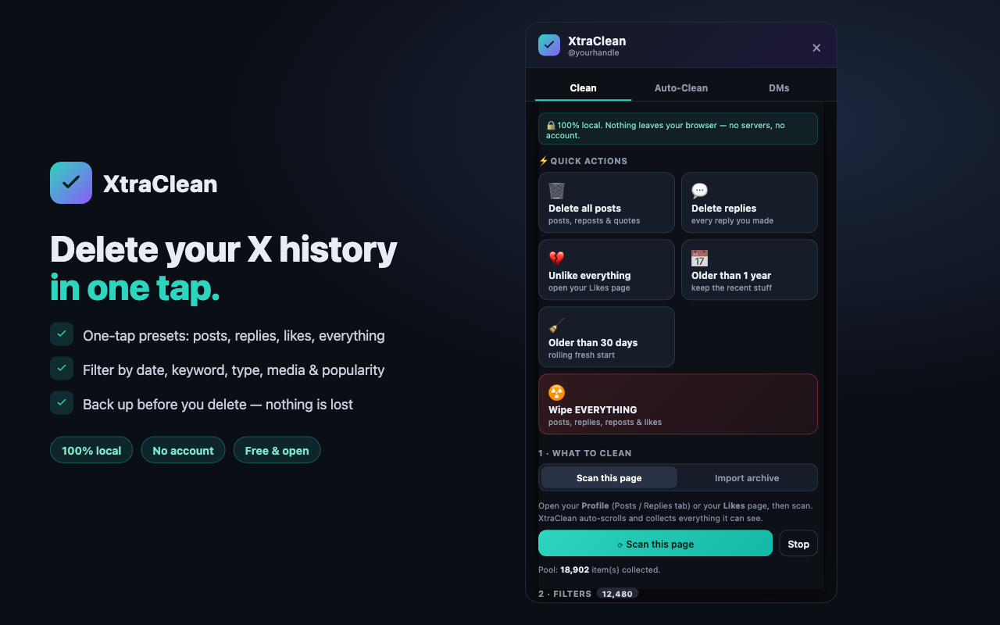
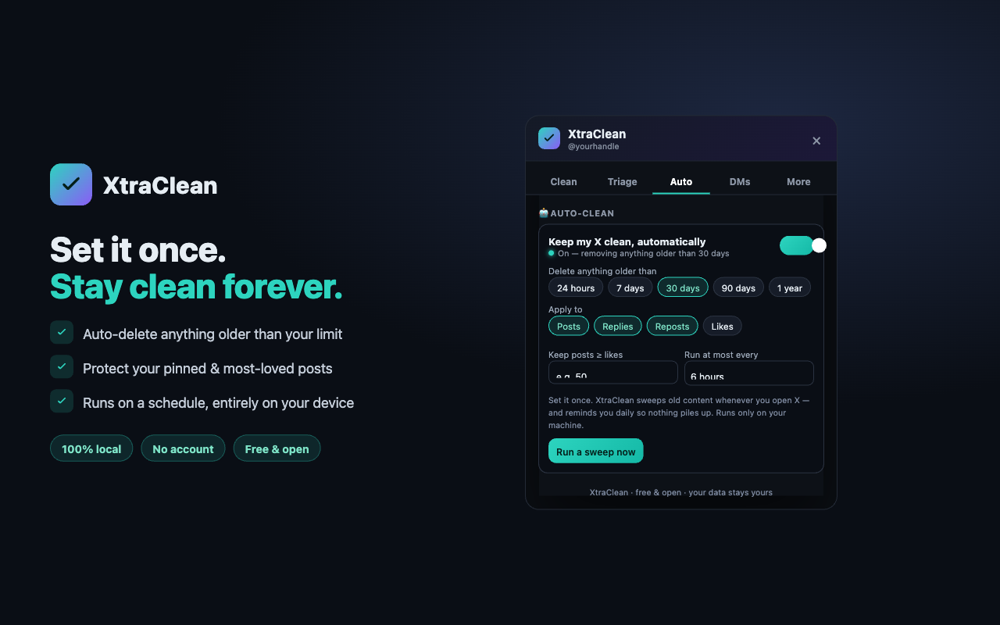
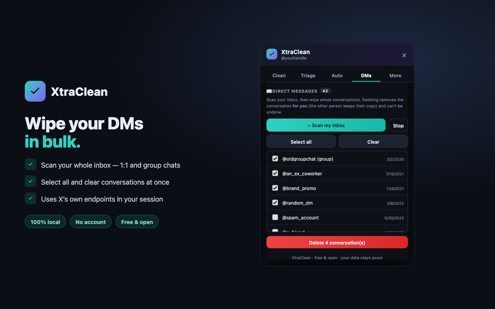

Bulk-delete your X / Twitter posts, replies, reposts, likes, and DMs — straight from your own browser. No account, no servers, no subscription. Nothing ever leaves your machine.
Delete all posts, unlike everything, "older than 30 days," or wipe everything — one click.
Date range, keyword/regex, type, media, and "keep anything with ≥ N likes."
Set a rule once — it sweeps old content automatically on a schedule.
Scan your inbox and wipe whole conversations, 1:1 and group.
Export exactly what's about to be deleted to JSON — no accidental loss.
No backend exists. The only network calls are to X itself, in your session.



.zip and unzip it.chrome://extensions (Chrome / Edge / Brave / Arc).⚠️ Deletion is permanent and can't be undone by X — use the built-in backup if unsure. XtraClean is an independent tool, not affiliated with or endorsed by X Corp. Automating X may conflict with X's Terms of Service; use at your own discretion.